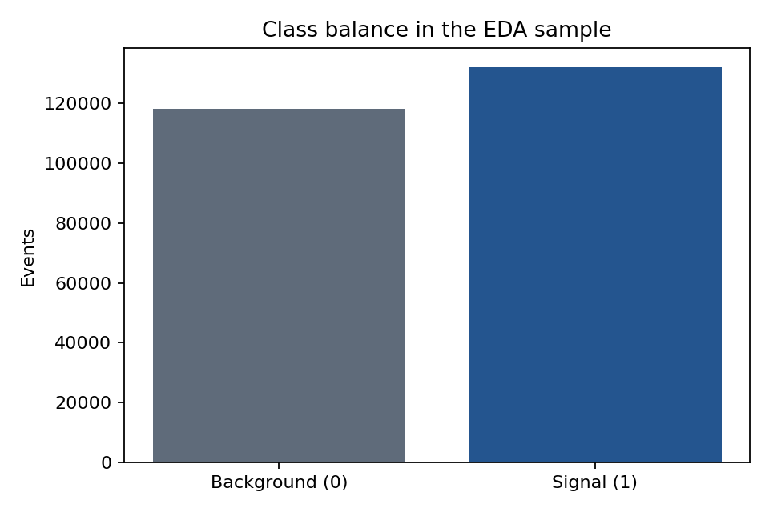
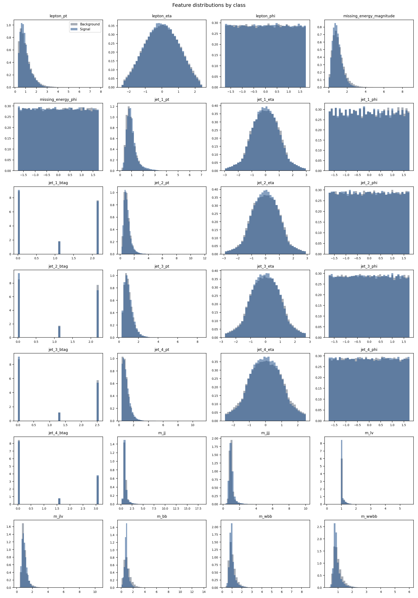
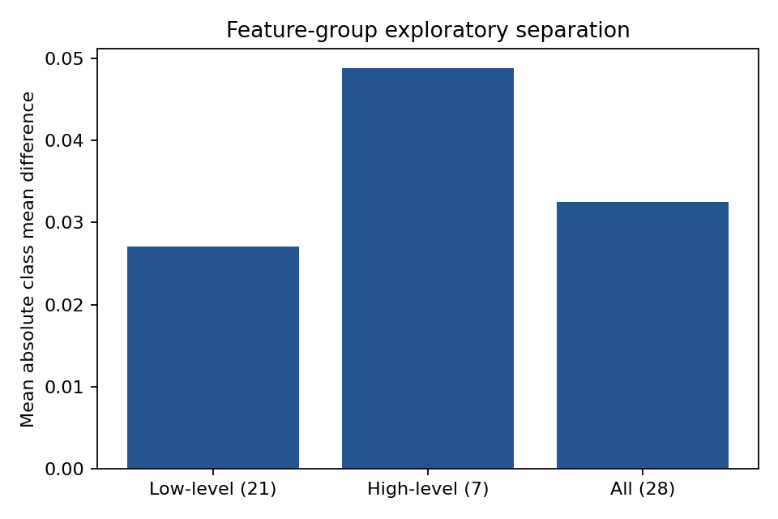
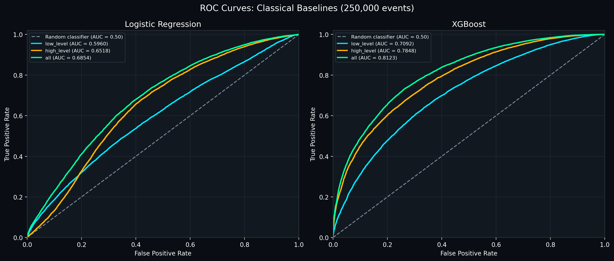
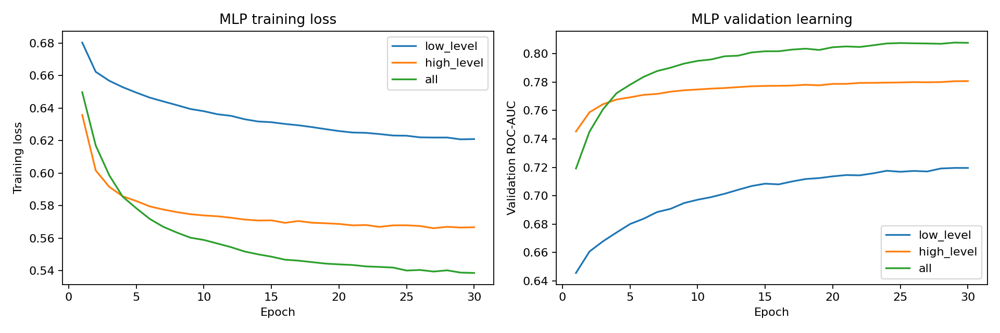
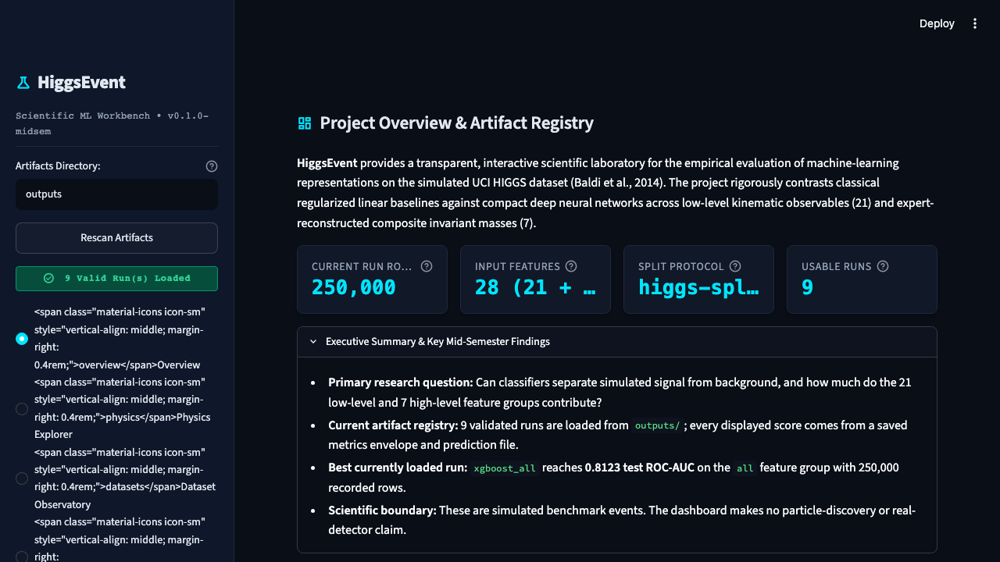

Final artifact-backed report
Project team: Saumya Mishra · Aditya Rana · Rachit
Gupta · Ronit Singh · Krishna
Dataset: UCI HIGGS, dataset 280
Source: https://archive.ics.uci.edu/dataset/280/higgs
Generated from: saved artifacts under
outputs/
Scientific boundary. HIGGS is a simulated Monte Carlo benchmark. This project evaluates classification software and makes no claim of particle discovery, real-detector performance, or physical probabilities.
HiggsLens is a reproducible machine-learning workbench for separating simulated HIGGS signal events from simulated background events. The implementation compares Logistic Regression, XGBoost and a regularised PyTorch multilayer perceptron across 21 low-level kinematic features, 7 high-level invariant-mass features and all 28 features.
The current validated artifact registry contains 9
runs over 250,000 recorded benchmark rows,
using the higgs-split-v1 protocol with seed 42. The
strongest currently loaded artifact is XGBoost on
all features, with test ROC-AUC
0.8123, PR-AUC 0.8266, Brier score
0.1765, and accuracy 0.7334.
Among all-feature runs, XGBoost is currently highest
at ROC-AUC 0.8123. This is the
report headline for the current saved registry, and it is explicitly
scoped to the recorded 250,000-row benchmark. The older
outputs/full_colab_results.json file is retained as an
archival 1M reference, but it is not mixed into the headline because it
uses a different pipeline/configuration and reports the same copied
runtime for all three models.
The central question is whether models can learn useful separation directly from low-level event kinematics, whether high-level invariant masses provide a measurable advantage, and how model family changes discrimination, calibration and compute cost.
In scope:
Outside scope:
The source is the UCI Machine Learning Repository HIGGS dataset (id 280), released under CC BY 4.0. The official archive contains approximately 11 million simulated events, one binary label and 28 inputs. The notebooks download the archive directly from the UCI URL; the repository contains code and artifacts, not the raw dataset.
| Item | Verified value |
|---|---|
| Dataset | UCI HIGGS, dataset 280 |
| Raw source URL | https://archive.ics.uci.edu/static/public/280/higgs.zip |
| Schema | 1 label + 28 features |
| Feature groups | 21 low-level + 7 high-level + 28 combined |
| Current saved EDA rows | 250,000 |
| Signal events in saved EDA | 131,942 (52.78%) |
| Background events in saved EDA | 118,058 (47.22%) |
| Missing values | 0 |
| Non-finite values | 0 |
| Split | 70% train / 15% validation / 15% test, seed 42 |
The exact raw-file row count and checksum should be recorded from the runtime that downloads the final archive. The saved EDA artifact is the authoritative source for the values above.
The EDA artifacts are generated under outputs/eda/ and
are displayed by the Dataset Observatory in Streamlit. The saved report
contains feature summaries, class balance, feature distributions, group
separation and correlation outputs.



The strongest saved feature correlations include
m_wbb–m_wwbb (0.895) and
m_jj–m_jjj (0.791). The four
b-tag features have three unique values each in the saved summary and
are strongly zero-inflated, which supports treating them as discrete
indicators rather than smooth measurements.
The loader validates column count, numeric values, binary labels and
finite feature values. A fixed seed of 42 creates a stratified
higgs-split-v1 partition. StandardScaler is fitted on
training rows only for Logistic Regression and the MLP. XGBoost uses the
validated feature matrix without requiring standardisation. The
operating threshold is selected on validation data for a 50%
signal-efficiency target, then frozen before test evaluation.
Every run exports a metrics.json envelope and a
test_predictions.csv file. The dashboard reads those files
and never trains a model during startup.
The linear baseline uses an L-BFGS solver with C=1.0 and
a training-only StandardScaler. It provides a fast, interpretable
reference for how much separation can be obtained without nonlinear
interactions.
The tree ensemble uses the project’s documented XGBoost configuration: 150 estimators, maximum depth 6, learning rate 0.1, subsample 0.8, column subsample 0.8 and histogram tree construction.
The neural baseline uses hidden widths 64 and 32, BatchNorm1d, ReLU,
dropout 0.20, AdamW, learning rate 1e-3, weight decay 1e-4, batch size
1024 and validation-ROC-AUC checkpointing. The saved
mlp_all run contains genuine per-epoch history with
30 epochs.
All values in the table below are computed from the current
outputs/*/metrics.json and prediction files. Accuracy is
recomputed at score threshold 0.5 from the saved test predictions.
| Model | Feature group | Features | ROC-AUC | PR-AUC | Brier | Accuracy | Time (s) |
|---|---|---|---|---|---|---|---|
| XGBoost | all |
28 | 0.8123 | 0.8266 | 0.1765 | 0.7334 | 4.72 |
| Compact MLP | all |
28 | 0.8121 | 0.8270 | 0.1767 | 0.7322 | 50.22 |
| XGBoost | high_level |
7 | 0.7848 | 0.8026 | 0.1882 | 0.7046 | 2.44 |
| Compact MLP | high_level |
7 | 0.7832 | 0.8020 | 0.1892 | 0.7044 | 47.00 |
| Compact MLP | low_level |
21 | 0.7257 | 0.7366 | 0.2113 | 0.6650 | 47.89 |
| XGBoost | low_level |
21 | 0.7092 | 0.7233 | 0.2165 | 0.6512 | 4.17 |
| Logistic Regression | all |
28 | 0.6854 | 0.6817 | 0.2231 | 0.6439 | 0.68 |
| Logistic Regression | high_level |
7 | 0.6518 | 0.6217 | 0.2315 | 0.6295 | 0.32 |
| Logistic Regression | low_level |
21 | 0.5960 | 0.6222 | 0.2418 | 0.5680 | 0.39 |


The all-feature models are the strongest configuration for each family in the current registry. The all-feature XGBoost and MLP results are close, while the linear model remains lower. High-level features alone outperform low-level features for each family in the current saved run set, but the combined representation performs best.
The threshold is selected on validation data rather than test data. For the current all-feature runs, the saved operating-point records show:
| Model | Validation threshold | Test signal efficiency | Test background rejection |
|---|---|---|---|
| XGBoost | 0.6906 | 50.30% | 89.17% |
| Compact MLP | not recorded | not recorded | not recorded |
| Logistic Regression | 0.5796 | 50.39% | 73.84% |
Background rejection is a benchmark operating metric, not a discovery significance. The Streamlit Validation view exposes the same saved test predictions through an interactive threshold workbench.
Launch the application with:
streamlit run app/main.pyThe dashboard now uses:
outputs/*/metrics.json and
test_predictions.csv for experiment comparison and
validation plots.outputs/eda/summary.json and
feature_summary.csv for Dataset Observatory metrics.The app reports 9 valid runs and skips non-run
folders such as outputs/eda/ and
outputs/model_weights/ during artifact discovery.

The repository test suite was run after the integration changes:
105 passedNotebook JSON parsing, code-cell compilation and
git diff --check also passed. The raw dataset is downloaded
at runtime from UCI, and generated data/model binaries remain outside
version control.
HiggsLens provides a working, artifact-backed comparison of three model families over the HIGGS feature groups. The current validated registry shows that combining the low-level and high-level inputs gives the strongest result for each family, with XGBoost and the compact MLP closely matched on all features and Logistic Regression providing a fast linear baseline. The Streamlit application now presents the same saved metrics and EDA outputs used in this report, preserving traceability from experiment files to the final presentation.
outputs/eda/summary.jsonoutputs/eda/feature_summary.csvoutputs/eda/feature_distributions.pngoutputs/eda/correlation_heatmap.pngoutputs/experiments.jsonoutputs/mlp_*/metrics.jsonoutputs/logreg_*/metrics.jsonoutputs/xgboost_*/metrics.json